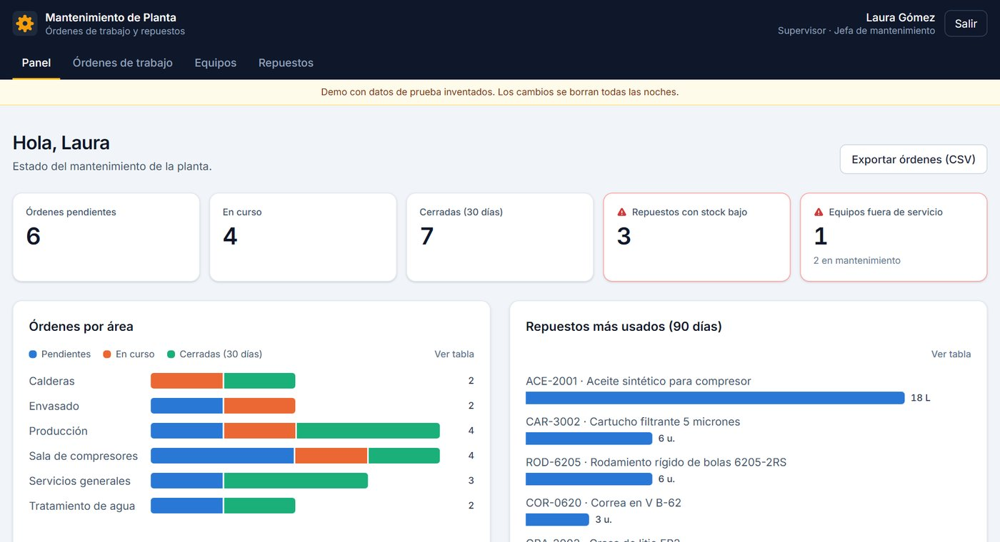
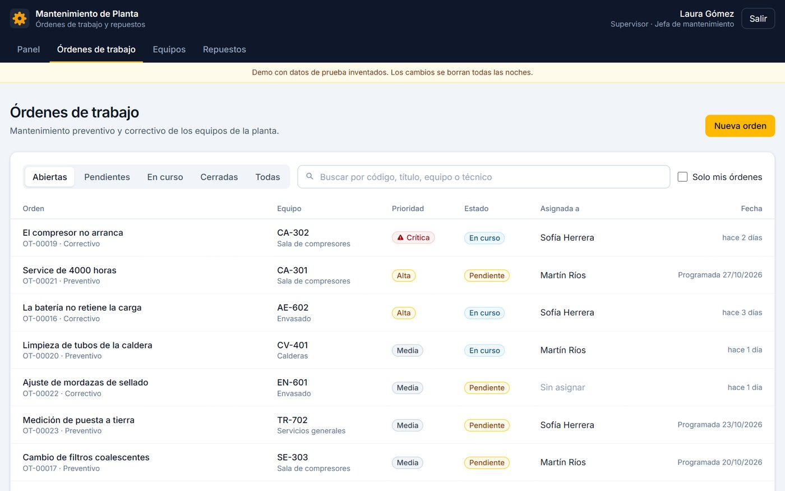
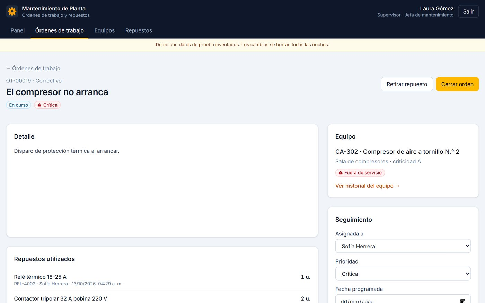
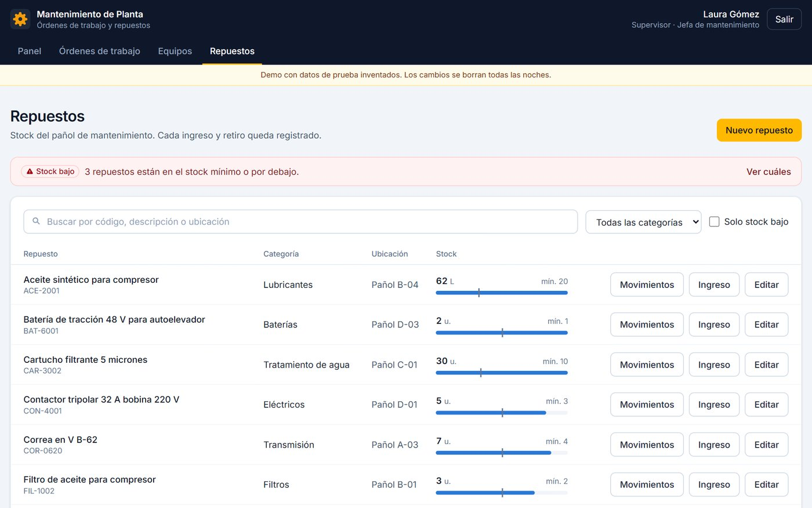

Sistema de Mantenimiento de Planta
Sistema web, desarrollado como proyecto personal, para el área de mantenimiento de una planta industrial: equipos, órdenes de trabajo y stock del pañol de repuestos.
- Órdenes de trabajo preventivas y correctivas con el ciclo pendiente, en curso y cerrada, prioridad y técnico asignado.
- Stock de repuestos con alerta de stock bajo; cada ingreso y retiro queda registrado con su orden de trabajo.
- Panel con reportes: órdenes por área, repuestos más usados y tiempo promedio de resolución, con exportación a CSV.
- Roles de supervisor y técnico con permisos controlados en la base de datos con Row Level Security, verificados con 29 pruebas automáticas.
- Publicado en GitHub Pages con datos de prueba que se reinician todas las noches.



